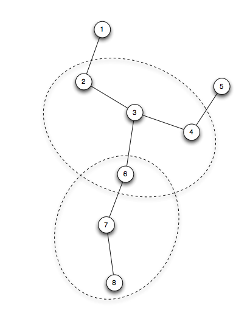

Network#simulate() is the simulation method for algorithm checking.
The structure is about reading sample file that contains sampled value, and executing the
while loop forever until count becomes the endCount.
def simulate(self, sampleFile, endCount = None):
# preprocessing
for obj in self.hostDict.values():
obj.readFromSampleDataFile(sampleFile)
if endCount is None:
endCount = SIMULATION_END
count = 0
while True:
self.preparation(count)
self.action(count)
count += 1
if count == endCount:
break
if Network.printResult: print "\n"
The simulation code in the while loop is two step process: preparation and action.
In preparation step, host#generateContext is invoked to calculate the contexts that are going to send. host#sendContexts is filled depending on the computation results.
def preparation(self, count):
for i, host in self.hostDict.items():
host.generateContext(count, printFlag = Network.printResult)
The contexts that should be send is the followings.
hop-count < tau.In Network#action() method, the contexts are sent to the neighbors.
def action(self, count):
for i, host in self.hostDict.items():
host.sendContextsToNeighbors(self.hostDict, printFlag = Network.printResult)
Note that sending Contexts actually executes the host#receiveContexts() method of the neighboring nodes.
def sendContextsToNeighbors(self, hostDict, printFlag = True):
for n in self.neighbors:
nobject = hostDict[n]
nobject.receiveContexts(self.sendContexts, self.id, printFlag)
Network#hostDict contains the dictionary that maps from host id, to the host object.
Note that the key is id number which is an integer.
def buildHost(self, topology = None):
if topology is None:
topology = self.networkTopology
for key, values in topology.items():
self.hostDict[key] = Host(key, values)
return self.hostDict
def networkFileParsing(self):
if self.networkTopology: return self.networkTopology
with open(self.networkFile, 'r') as f:
for l in f:
first, rest = getFirstRest(l)
self.networkTopology[first] = rest
This is the network topology file content. First column shows the host id, and the rest of the line is the neighboring node ids.
1: 2
2: 1 3
3: 2 4 6
4: 3 5
5: 4
6: 3 7
7: 6 8
8: 7

Based on the algorithm 1, contextAggregator#aggregate() computes the maximally merged GroupContext. The input for this method should be:
The contextAggregator#aggregate() method also returns prime aggregates and non-prime aggregates also.
same not == in list comparisons.We have two lists, in terms of comparison, you cannot use == operator.
Consider this example:
class A(object): pass
a = A()
b = A()
c = A()
print [a,b,c] == [a,b,c] # True
print [a,b,c] == [c,b,a] # False
The list members should be the same and in the same order.
So, when you do some comparisons with the return value from an operation such remove().
You just cannot compare two lists. Instead you should use same() method.
result = remove([a,b,c],c)
expected = [a,b]
printList(result)
printList(expected)
self.assertTrue(result == expected) # Returns False
self.assertTrue(same(result,expected)) # Returns True
same() method is in utility.py file.
def same(contexts1, contexts2):
s1 = set(contexts1)
s2 = set(contexts1)
return s1 == s2